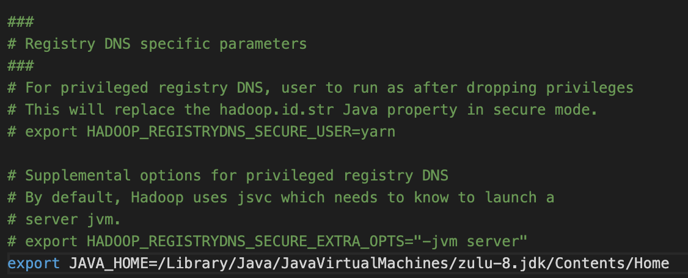

[M1] Mac OS에 하둡(Hadoop) 설치 #
설치 개요 #
[ 설치 목적 ] 하둡의 맵리듀스와 분산 파일 시스템인 HDFS를 경험해보자!
[ 설치 환경 ]
OS : [M1] MacOS Monterey 12.0.1
Hadoop : 3.3.2[ 기초 배경지식 ]
하둡 맵리듀스는 수천개의 노드로 구성된 클러스터에서 병렬로 데이터를 처리하는 오픈소스 프레임워크이다. 하지만 개인이 클러스터 환경을 갖추기 어려우니, 하둡에서 Single node 설치 방법을 제공해준다.[ 설치 링크 ]
(1) Cluster Setup
(2) Single Node Setup나는 Single Node Setup을 따르며
(1) Local (Standalone) Mode (2) Pseudo-Distributed Mode (3) Fully-Distributed Mode
3가지 모드 중 Pseudo-Distributed Mode 로 설치하며 Yarn 사용을 위한 세팅도 진행한다.[ 사전 체크 항목 ]
Supported platforms : 기본적으로 Linux/GNU/Window 지원
Required software :
(1) 지원 Java 버전 설치 : Java 8 과 11 지원하지만, compile시 Java 11은 지원하지 않는다.
(2) ssh 설치
STEP1. 하둡 설치 #
터미널에 명령 입력
brew install hadoop
만약 brew가 없다면 Homebrew에 접속하여 설치해준다.
만약 brew가 아닌 직접 설치를 원한다면 Hadoop에서 원하는 버전의 파일을 다운받고 압축을 해제해주면 설치가 완료된다.
STEP2. 환경변수 수정 #
## 하둡의 버전과 설치된 경로를 확인
brew info hadoop
## 경로는 위 명령어로 확인 및 하둡 버전 X.X.X는 본인이 설치한 버전으로 수정
cd /opt/homebrew/Cellar/hadoop/3.3.2
Finder에서 저 경로가 보이지 않았지만, 터미널에서 명령어 치니 경로가 잘 들어가지긴 했다.
그래도 직접 Finder에서 보기 위해서 Finder에서 ‘Cmd+Shift+G’ 를 치니 경로 검색 창이 떴고 그걸로 들어가니 Finder에서 볼 수 있었다. 앞으로 수정해야할 하위 파일들은 아래 경로에 있으니 들어가준다.
cd libexec/etc/hadoop
앞으로 수정해야 할 파일들
(1) hadoop-env.sh (하둡 사용)
(2) core-site.xml (Pseudo-Distributed Mode)
(3) hdfs-site.xml (Pseudo-Distributed Mode)
(4) mapred-site.xml (YARN)
(5) yarn-site.xml (YARN)
2-1. hadoop-env.sh 변경 #
open hadoop-env.sh
파일을 열고 아래 명령어로 본인의 자바 경로를 확인 후 나온 경로를 추가해준다.
## 자바 경로 확인
/usr/libexec/java_home
## 버전이 여러개라면 버전 특정하기
/usr/libexec/java_home -v8
export JAVA_HOME="/Library/Java/JavaVirtualMachines/zulu-8.jdk/Contents/Home"
아래 그림처럼 그냥 맨 마지막줄에 추가해주면 된다. 
이제, 하둡 클러스터를 사용할 준비가 완료됐다.
하둡 최상위 경로에서 아래 명령어를 치면 정상 실행되는지 확인 가능하다!
bin/hadoop
Single Node 지만 다음 3가지 모드가 지원되며 내가 사용하고 싶은 Pseudo-Distributed Mode를 위해 추가적으로 환경변수를 수정하자
(1) Local (Standalone) Mode (2) Pseudo-Distributed Mode (3) Fully-Distributed Mode
Pseudo-Distributed Mode란? : 각 하둡 daemon이 각각의 분리된 Java 프로세스에서 실행되는 모드로, standalone 모드와 다르게 가상으로 분산시스템을 경험할 수 있다.
2-2. core-site.xml 변경 #
open core-site.xml
파일을 열어
<configuration>
<property>
<name>fs.defaultFS</name>
<value>hdfs://localhost:9000</value>
</property>
</configuration>
2-3. hdfs-site.xml 변경 #
open hdfs-site.xml
파일을 열어
<configuration>
<property>
<name>dfs.replication</name>
<value>1</value>
</property>
</configuration>
이제 로컬에서 맵리듀스를 실행해 볼 수 있지만,
YARN으로 맵리듀스 및 리소스매니저와 노드매니저 daemon 을 실행해보기 위해서 추가적으로 더 환경변수를 수정해준다.
2-4. mapred-site.xml 변경 #
open mapred-site.xml
파일을 열어
<configuration>
<property>
<name>mapreduce.framework.name</name>
<value>yarn</value>
</property>
<property>
<name>mapreduce.application.classpath</name>
<value
>$HADOOP_MAPRED_HOME/share/hadoop/mapreduce/*:$HADOOP_MAPRED_HOME/share/hadoop/mapreduce/lib/*</value
>
</property>
</configuration>
2-5. yarn-site.xml 변경 #
open yarn-site.xml
파일을 열어
<configuration>
<property>
<name>yarn.nodemanager.aux-services</name>
<value>mapreduce_shuffle</value>
</property>
<property>
<name>yarn.nodemanager.env-whitelist</name>
<value
>JAVA_HOME,HADOOP_COMMON_HOME,HADOOP_HDFS_HOME,HADOOP_CONF_DIR,CLASSPATH_PREPEND_DISTCACHE,HADOOP_YARN_HOME,HADOOP_HOME,PATH,LANG,TZ,HADOOP_MAPRED_HOME</value
>
</property>
</configuration>
STEP3. 하둡 실행 #
3-1. 실행 전 준비 #
ssh localhost
ssh 를 한번 더 체크해보고 만약 마지막 접속 시간이 뜨지 않으면 페이지 상단에 “ssh 설치 여부 및 권한 확인"을 확인해보기 바란다.
이제 HDFS 로 포맷한다.
## 본인 하둡 경로 들어가기
cd /opt/homebrew/Cellar/hadoop/3.3.2
## 파일시스템 포맷
hdfs namenode -format
3-2. 하둡 실행 #
cd /opt/homebrew/Cellar/hadoop/3.3.2/libexec
sbin/start-all.sh
# 또는 로컬에서 맵리듀스 실행
sbin/start-dfs.sh
# 또는 yarn에서 맵리듀스 실행
sbin/start-yarn.sh
위 명령어를 입력해주면 정상적으로 실행된다.
또한 맵리듀스 실행을 위해서 HDFS 디렉토리가 필요하므로 만들어둔다.
# 경로는 하둡 최상위 경로에서 실행
# cd /opt/homebrew/Cellar/hadoop/3.3.2
bin/hdfs dfs -mkdir /user
bin/hdfs dfs -mkdir /user/<username>
3-3. 실행 확인 #
jps
jps 를 터미널에 입력해주면, 하둡이 정상 설치 및 실행되고 있음을 아래와 같이 보여준다.
35906 DataNode
36274 NodeManager
38132 SecondaryNameNode
38456 Jps
35800 NameNode
36175 ResourceManager
그럼 이제 localhost 로 접속해서 확인해보자
Cluster status : http://localhost:8088
HDFS status : http://localhost:9870
Secondary NameNode status : http://localhost:9868
[ 실행 화면 예시 ]
3-4. 실행 종료 #
## 만약 경로가 하둡 최상단 경로가 아니라면 다시 들어가준다.
## 하지만 해당 경로에서 ./start-all.sh 로 실행 해 줬기 때문에
## 그냥 아래 ./stop-all.sh만 실행해주면 된다.
sbin/stop-all.sh
# 또는
sbin/stop-dfs.sh
# 또는
sbin/stop-yarn.sh
Reference #
Hadoop: Setting up a Single Node Cluster
Installing Hadoop on a Mac
macOS에서 Hadoop 설치하기